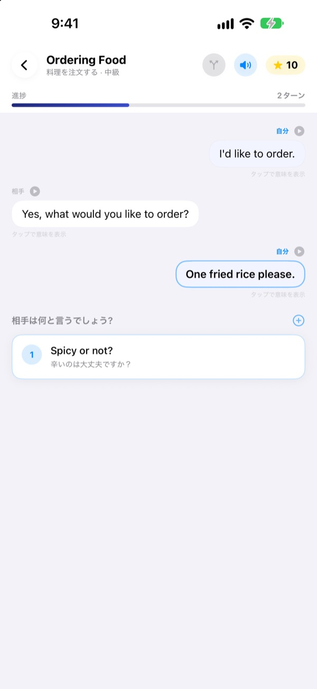
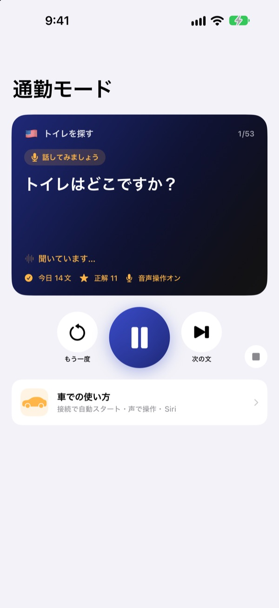
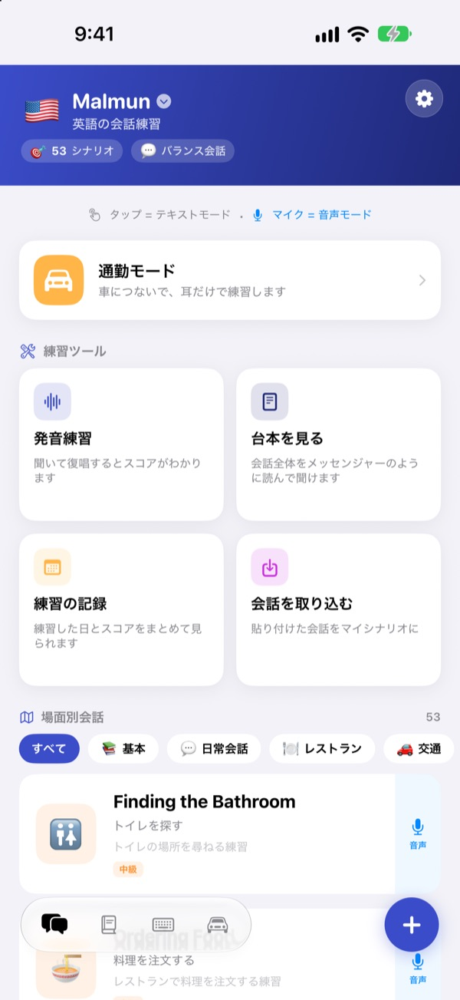
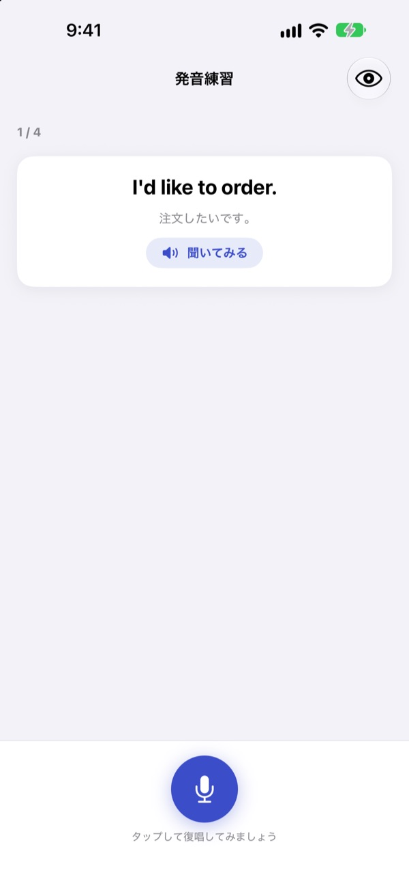

言いよどんでいたひと言を、
自分から口にする
Malmunは、選んだ返事によって会話の行き先が変わる会話練習アプリです。英語、韓国語、中国語、スペイン語、インドネシア語から学ぶ言語を選び、通勤の車内では画面を見ずに耳と声だけで練習します。
分岐する会話、発音練習、単語帳は無料です。

会話を自分で進めてみよう
アプリに入っているインドネシア語の会話「朝のあいさつ」です。次のひと言を選ぶたびに、会話が別の方向へ流れていきます。
フレーズは覚えたのに、返事が出てこなかったことはありませんか？
教科書の会話は台本どおりに進みますが、現実の相手は予想外の言葉で返してきます。Malmunは一つの会話の分岐を前もって一通りたどらせてくれるので、どんな返事が来ても次のひと言をつなげられます。手がふさがる通勤時間も練習時間に変わります。
運転しながら耳で練習
通勤モードはBluetoothやCarPlayで車のスピーカーから流れます。まず意味を聞き、チャイムのあとに自分で言ってみる時間があり、最後に正解をゆっくり一回、普通の速さで一回聞きます。
ハンドルのボタンで次へ進んだり聞き直したりでき、自分の番には次、もう一回、ゆっくりと声でも操作できます。ナビの案内が入ると一時停止します。

旅行と暮らしの場面がそろっています
どの言語にも場面別会話が53本。基本表現や日常会話から、レストラン、交通、空港、ホテル、買い物、観光、緊急時まで入っています。
インドネシア語を学ぶなら、さらに手作りのスモールトーク5本、6場面ずつの一日コース3本と週間時間割、出張ですぐ使える100語もあります。

言ったとおりに伝わったか確かめる
発音練習は点数とあわせて、言えた単語と抜けた単語を色で示します。
台本ビューでは会話全体をチャットのように広げて通しで聞けます。意味を隠して自分を試すこともできます。

はじめ方は3ステップ
- 1
学ぶ言語を選ぶ
ホーム画面の一番上の国旗をタップします。マイフレーズと単語帳は言語ごとに分けて保存されます。
- 2
会話をひとつ開く
返事をタップすればテキストモード、マイクをタップして話せば、いちばん近い返事を探す音声モードです。
- 3
車では通勤モード
iPhoneを車につないで再生を押すだけ。画面を見る必要はありません。
通勤モードの操作
- ハンドルの次の曲ボタン
- 次の文
- ハンドルの前の曲ボタン
- 同じ文をもう一度
- 再生ボタン
- 一時停止、再開
次·スキップ- 次の文
もう一回·もう一度- もう一度聞く
ゆっくり·速く- 読み上げの速さを変える
次の場面- 次の会話へ
止めて·ストップ- 練習をやめる
- Siriに「Malmunで通勤練習を始めて」
- iPhoneに触れずに始める
声の命令は、チャイムのあと自分が話す番のときだけ聞き取ります。文を正しく言えると「いいね！」と教えてくれます。いまの文は車の画面の再生情報に表示されます。CarPlay専用のアプリ画面はありません。
ほとんど無料。もっと使うならMalmun Pro
無料
- 分岐するスモールトークと一日コース（インドネシア語）
- 場面別会話の基本表現と日常会話
- 通勤モード 1日3場面
- 発音練習、台本ビュー、会話の取り込み、練習記録
- マイフレーズ、単語カード、フレーズキーボード
- 友だちとシナリオを共有、AIでシナリオ作成
Malmun Pro
- 場面別会話のすべて：レストラン、交通、空港、ホテル、買い物、観光、緊急時
- 通勤モード無制限
- 6言語すべてに適用
年間サブスクリプション、または一度きりの買い切り
価格はアプリ内とApp Storeでご確認ください。年間プランは期間終了の24時間前までに解約しない限り自動で更新されます。
よくある質問
車ではどう使いますか？
iPhoneをBluetoothかCarPlayで車につなぎ、通勤モードで再生を押してください。音は車のスピーカーから流れ、いまの文は「再生中」に表示されます。Siriに「Malmunで通勤練習を始めて」と話しかけてもかまいません。ショートカットアプリ ▸ オートメーションで、CarPlay（または車のBluetooth）につながったときに「通勤練習を始める」を実行するよう一度設定しておけば、乗るとすぐに始まります。
マイクはずっと聞いているのですか？
いいえ。チャイムのあと自分が話す番のときだけiPhoneのマイクで聞き取り、聞いた内容は端末の中だけで処理します。命令はアプリの表示言語で話します。
どの言語を学べますか？
英語、韓国語、中国語、スペイン語、インドネシア語です。アプリを日本語で使っていれば、文の意味も声の命令も日本語です。
発音がうまく認識されません。
音声認識はいま学んでいる言語で動きます。静かな場所で試し、その言語の音声認識が端末にダウンロードされているか確認してください。
キーボードはどう追加しますか？
設定 ▸ 一般 ▸ キーボード ▸ キーボード ▸ 新しいキーボードを追加 でMalmunのキーボードを選んでください。入力中に地球儀ボタンを押すと切り替わります。フルアクセスは必要ありません。表示するフレーズは、ホーム画面右下のキーボードアイコン ▸ キーボード管理で一つずつオン・オフできます。
友だちが共有したシナリオが見えません。
友だちとの共有はiCloudで動きます。二人ともiCloudにサインインしている必要があります。それでも表示されなければ、アプリを完全に閉じてから開き直してください。
AIでシナリオを作るには何が必要ですか？
自分のAnthropic APIキーをアプリに入れてテーマを書くと、新しい会話を作ってくれます。キーがなくても、ほかの機能はすべて使えます。
解約や返金はどうすればいいですか？
決済はAppleが扱います。解約はiPhoneの設定 ▸ Appleアカウント ▸ サブスクリプション ▸ Malmun から。返金はreportaproblem.apple.comでAppleに申請してください。
機種変更したらProが外れました。
同じAppleアカウントでサインインしてから、Malmunの設定 ▸ Malmun Pro ▸ 購入を復元 をタップしてください。
学習記録はどこに保存されますか？
アカウントは不要です。学習記録は自分の端末と自分のiCloudだけに保存され、広告もトラッキングもありません。送るのは改善のための匿名の利用統計とエラー情報だけです。不具合や要望はGitHub Issues（github.com/M1zz/IndonesianSmallTalk/issues）にも書き込めます。
ご質問やご意見はleeo@kakao.comまでお送りください。アプリの設定 ▸ フィードバックを送る、Instagramの@lee25_iosでも受け付けています。